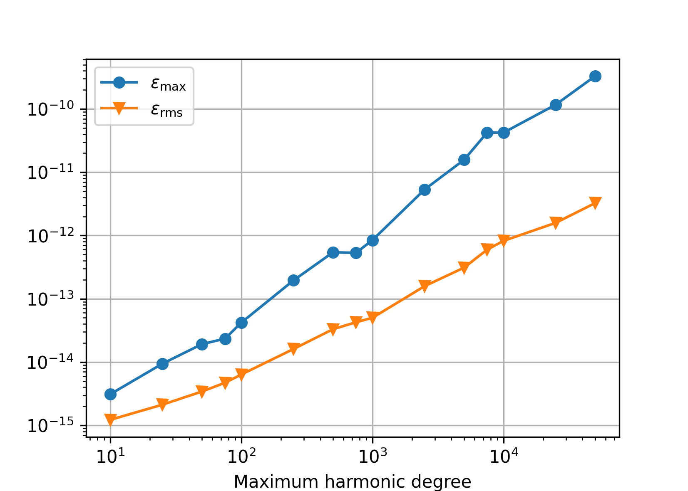
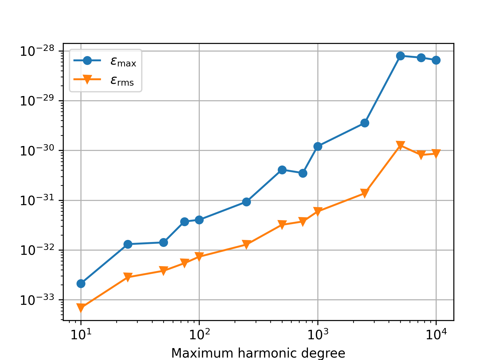
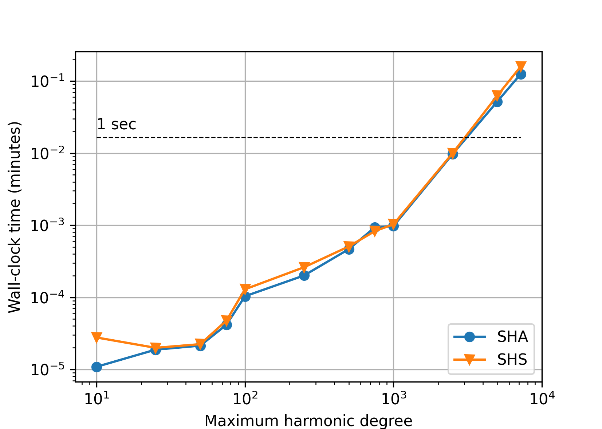

Benchmarks
This section demonstrates the accuracy, the computation speed and the memory
requirements of spherical harmonic analysis and synthesis of point data values.
Applied is the Gauss–Legendre quadrature, which offers the best performance.
All tests were executed on a PC with the Intel(R) Core(TM) i7-6800K CPU
@ 3.40GHz and 128 GBs of RAM. CHarm was compiled using GCC with
--enable-openmp, --enable-avx and CFLAGS="-O3 -ffast-math"
installation flags. All 6 CPU cores were employed with hyperthreading enabled.
The benchmarks can be executed by make bench after running ./configure
and make. The outputs from the benchmark program (the accuracy and
wall-clock times) can be plotted by a Python script plot-bench.py inside
the bench folder (requires numpy and matplotlib). The memory
requirements can be plotted by the plot-memory.py script that can be found
inside the same directory.
Warning
The benchmark program may require up 56 GBs of RAM! Do not execute it if
you do not have that much RAM available. Alternatively, modify the
nmax_all array inside ./bench/bench.c.
Accuracy
We generated reference random spherical harmonic coefficients from the interval
[-1.0, 1.0] up to degree N, then synthesized the signal up to degree
N, and, finally, harmonically analyzed the signal
up to the same N degree. Below are plotted the following statistics
obtained from the differences between the recovered and the reference
coefficients:
\(\varepsilon_{\max} = \max_{n,m}|\bar{Q}_{nm} - \bar{Q}^{(\mathrm{ref})}_{nm}|\),
\(\varepsilon_\mathrm{rms} = \sqrt{\frac{2}{(N + 1) (N + 2)} \, \sum_{n,m} \left(\bar{Q}_{nm} - \bar{Q}^{(\mathrm{ref})}_{nm} \right)^2}\).
Single precision
In single precision, the tests are conducted up to N = 7200 only.
Somewhere beyond that degree, it becomes difficult to compute the nodes of the
Gauss–Legendre quadrature without an overflow in single precision. The
Driscoll–Healy quadrature could be used as an alternative, but this would
produce heterogeneous tests.
Double precision
Polar optimization disabled (default)
Polar optimization enabled (charm_glob_polar_optimization_a1 = 100,
charm_glob_polar_optimization_a2 = 0.01). Comparing this figure and the
previous one, it is seen that even though the polar optimization introduces
approximations to spherical harmonic transforms, the numerical accuracy is
the same. The small differences between the two figures are caused by the fact
that a new set random spherical harmonic coefficients was generated in both
experiments.

Quadruple precision
Speed
The figures that follow plot the wall-clock times needed to perform spherical harmonic synthesis and analysis in the experiments from the Accuracy section.
Single precision
Double precision
Polar optimization disabled (default)

Using the polar optimization (charm_glob_polar_optimization_a1 = 100,
charm_glob_polar_optimization_a2 = 0.01), the performance improved by about
25 percent, while the accuracy remains the same (see above). More aggressive
polar optimization can further improve the performance, but, after some
critical point, only at the cost of deteriorated accuracy.

Quadruple precision

Memory
The next figure shows theoretical memory requirements for spherical harmonic analysis/synthesis of point data values sampled at the Gauss–Legendre grid. The values were computed for single, double and quadruple precision as (GBs)
where
\(N\) is the maximum harmonic degree, which determines the size of arrays to store the input data grid, \((N + 1) \, (2 \, N + 2)\), and the spherical harmonic coefficients, \({\sim}(N + 1)^2\), and
\(B\) is the number of bytes needed to store a single
float,doubleor__float128floating point value (here assumed4,8and16Bytes, respectively).
Although these are theoretical requirements, they model the reality very well, as all the remaining arrays are significantly smaller.